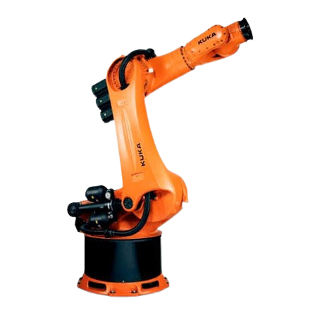

Robô Articulado

O robô Articulado é o tipo mais versátil de robô industrial, composto por múltiplas juntas rotativas que imitam os movimentos de um braço humano.
Conceito
Robôs articulados, também chamados de robôs de 6 eixos, possuem uma cadeia de juntas rotativas conectadas por elos rígidos. Essa configuração oferece grande liberdade de movimento, permitindo alcançar praticamente qualquer ponto e orientação dentro do seu envelope de trabalho, o que os torna o tipo de robô industrial mais utilizado no mundo atualmente.
Princípio de funcionamento
Cada junta é acionada por um servomotor acoplado a um redutor de precisão, responsável por controlar o ângulo daquele elo. Um controlador central resolve a cinemática do robô (direta e inversa) para calcular os ângulos necessários em cada junta e posicionar o efetuador terminal na posição e orientação desejadas no espaço tridimensional.
Características técnicas
De 4 a 7 eixos de liberdade
Cargas de poucos kg até mais de 1.000 kg, conforme o porte
Envelope de trabalho esférico e complexo
Alta repetibilidade, geralmente inferior a 0,1 mm
Grande liberdade de orientação do efetuador
Programação por ensino (teach pendant) ou offline
Aplicações industriais
Soldagem a arco e a ponto
Pintura industrial
Montagem de conjuntos complexos
Paletização e manuseio de materiais
Linhas de produção automotivas
Inspeção e controle de qualidade
Integração com automação e IoT
Sensores de corrente e torque instalados nos motores de cada junta permitem monitorar o desgaste mecânico do robô, enviando dados continuamente para sistemas de manutenção preditiva.
Protocolos como PROFINET, EtherCAT e OPC UA conectam o robô ao restante do chão de fábrica, possibilitando a criação de gêmeos digitais (digital twins) que simulam e otimizam trajetórias antes mesmo de serem executadas fisicamente.
Modelos comerciais
- Robôs de médio a grande porte
- Uso intenso em soldagem e manuseio pesado
- Ampla oferta de softwares de simulação (RobotStudio)
- Alta rigidez estrutural
- Cargas elevadas para a indústria automotiva
- Controlador KR C com suporte a redes industriais
- Robôs compactos de alta precisão
- Amplamente usados em montagem e manuseio
- Integração com plataforma FANUC FIELD para IoT